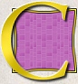
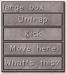
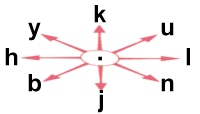
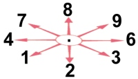

4. Commands
ommands are given
either with the mouse or by typing one or two characters.
If you left-click an object, creature or location in the main view, Vulture's Eye
will try to perform a default action for that object, creature or location.
The default actions are:
- click a distant location to move closer to it (press 'space' to stop moving)
- click a closed door to open it
- click a hostile creature next to you to attack it
- at a fountain, click on yourself to take a drink
- on a stairwell, click on yourself to climb it
- at a chest, click on yourself to loot the chest
- otherwise, click on yourself to search your vicinity

You can also right-click an object, creature or location. This brings up a
context menu which lists a number of likely commands. Click any of the
command buttons in the menu to perform that command, or click outside the menu
to dismiss it. For example, to kick a door, right-click it and
select "kick" from the menu. (You might need to move closer first.)
Some commands require more information, for example
a direction, or an object to be used.
If a command requires more information, NetHack will
show you a menu of choices or a command line prompt requesting information.
Which one it is depends on the menustyle option.
For example, a common question like ``What do
you want to use? [a-zA-Z ?*]'', asks you to choose an object you
are carrying. Here, ``a-zA-Z'' are the inventory letters
of your possible choices. Type `?' to see an inventory list of these items,
so you can see what the letters refer to. In this example, there is
also a `*', indicating that you may choose an object not on the list, if
you wanted to use something unexpected. Typing a `*' lists
your entire inventory.
Finally, if you don't want to do this command after all,
you can press the ESC key to cancel the command.
You can put a number before some commands to repeat
them; for example, ``10s'' will search ten times.
If you have the number_pad option set, you must type `n' to prefix a count,
so the example above would be typed ``n10s'' instead.
Commands for which counts make no sense ignore them.
In addition, movement commands can be prefixed for greater
control (see below). To cancel a count or a prefix, press the ESC
key.
There are many commands for which Vulture's Eye has no shortcut.
Some of these (the extended commands) can be selected by clicking
on the hand button. Others are used from the keyboard.
The list of keyboard commands is rather long, but it can be read
at any time during the game through the help button,
which displays a menu of helpful texts.
Here are the commands for your reference:
4.1 Getting help
-
/
-
Tell what a symbol represents. You may choose to specify a
location or type a symbol (or even a whole word) to explain. Specifying
a location is done by moving the cursor to a particular spot
on the map and then pressing one of the following keys: [.
, ; :].
-
`.' will explain the symbol at the chosen location, conditionally
check for ``More info?'' depending upon whether the help option
is on, and then you will be asked to pick
another location; `,' will explain the symbol but skip any additional information;
`;' will skip additional info and also not bother asking you to choose
another location to examine; `:' will show additional info,
if any, without asking for confirmation. When picking
a location, pressing the ESC key will terminate this command, or
pressing `?' will give a brief reminder about how it works.
-
?
-
Help menu: display one of several help texts available.
-
&
-
Tell what a command does.
-
;
-
Show what type of thing a visible symbol corresponds to.
-
^
-
Ask for the type of a trap you found earlier.
-
\
-
Show what types of objects have been discovered.
4.2 Moving and exploring
-
[yuhjklbn]
-
Go one step in the direction indicated (see the figure below).
If you can sense a monster there, you will fight the
monster instead. Only these one-step movement commands cause you
to fight monsters; the others (below) are ``safe.''
|  |

if number_pad is set |
-
-
[YUHJKLBN]
-
Go in that direction until you hit a wall or run into something.
-
m[yuhjklbn]
-
Prefix: move without picking up objects or fighting (even
if you remember a monster there)
-
F[yuhjklbn]
-
Prefix: fight a monster (even if you only guess
one is there)
-
M[yuhjklbn]
-
Prefix: move far, no pickup.
-
g[yuhjklbn]
-
Prefix: move until something interesting is found.
-
G[yuhjklbn]or
^[yuhjklbn]
-
Prefix: same as `g', but forking of corridors is not
considered interesting.
-
<
-
Go up to the previous level (if you are on the staircase or ladder).
-
>
-
Go down to the next level (if you are on the staircase
or ladder).
-
c
-
Close a door.
-
o
-
Open a door.
-
s
-
Search for secret doors and traps around you. It
usually takes several tries to find something.
-
^T
-
Teleport, if you have the ability.
-
:
-
Look at what is here.
4.3 Managing your inventory
-
d
-
Drop something. Ex. ``d7a'' means drop seven items of
object a.
-
D
-
Drop several things. In answer to the question ``What kinds of
things do you want to drop? [!%= aium]'' you should type zero or more object
symbols possibly followed by `a' and/or `i' and/or `u' and/or `m'.
-
-
Da - drop all objects, without asking
for confirmation.
-
Di - examine your inventory before
dropping anything.
-
Du - drop only unpaid objects (when
in a shop).
-
Dm - use a menu to pick which object(s)
to drop.
-
D%u - drop only unpaid food.
-
i
-
List your inventory (everything you're carrying).
-
I
-
List selected parts of your inventory.
-
I* - list all gems in inventory;
-
Iu - list all unpaid items;
-
Ix - list all used up items that are on your
shopping bill;
-
I$ - count your money.
-
,
-
Pick up some things.
-
)
-
Tell what weapon you are wielding.
-
[
-
Tell what armor you are wearing.
-
=
-
Tell what rings you are wearing.
-
"
-
Tell what amulet you are wearing.
-
(
-
Tell what tools you are using.
-
*
-
Tell what equipment you are using; combines the preceding
five type-specific commands into one.
-
$
-
Count your gold pieces.
4.4 Using items
-
a
-
Apply (use) a tool (pick-axe, key, lamp...).
-
A
-
Remove one or more worn items, such as armor. Use `T' (take off)
to take off only one piece of armor or `R' (remove) to take off only one
accessory.
-
e
-
Eat food.
-
f
-
Fire one of the objects placed in your quiver.
You may select ammunition with a previous `Q' command,
or let the computer pick something appropriate if autoquiver is true.
-
P
-
Put on a ring or other accessory (amulet, blindfold).
-
q
-
Quaff (drink) a potion.
-
Q
-
Select an object for your quiver. You can then throw
this using the `f' command. (In versions prior to 3.3
this was the command to quit the game, which has now been moved
to `#quit'.)
-
R
-
Remove an accessory (ring, amulet, etc).
-
r
-
Read a scroll or spellbook.
-
t
-
Throw an object or shoot a projectile.
-
T
-
Take off armor.
-
w
-
Wield weapon.
-
w- - wield nothing, use your bare hands.
-
W
-
Wear armor.
-
x
-
Exchange your wielded weapon with the item in your secondary weapon
slot. The latter is used as your second weapon in two-weapon
combat. Note that if one of these slots is empty, the exchange
still takes place.
-
z
-
Zap a wand. To aim at yourself, use `.' for the direction.
4.5 Using Spells
-
Z
-
Zap (cast) a spell.
-
+
-
List the spells you know. Using this command, you can also
rearrange the order in which your spells are listed.
They are shown via a menu, and if you select a spell
in that menu, you'll be re-prompted for another spell to swap places
with it, and then have opportunity to make
further exchanges.
4.6 Miscellaneous commands
-
.
-
Rest, do nothing for one turn.
-
^A
-
Redo the previous command.
-
C
-
Call (name) an individual monster.
-
^C
-
Panic button. Quit the game.
-
^D
-
Kick something (usually a door).
-
E
-
Engrave a message on the floor. Engraving the word
``Elbereth'' will cause most monsters to not attack you
hand-to-hand (but if you attack, you will rub it out); this
is often useful to give yourself a breather. (This feature may be
compiled out of the game, so your version might not have it.)
-
E- - write in the dust with your fingers.
-
O
-
Set options. A menu showing the current option values will
be displayed. You can change most values simply by selecting
the menu entry for the given option (ie, by typing its letter
or clicking upon it, depending on your user interface).
For the non-boolean choices, a further menu
or prompt will appear once you've closed this menu. The available
options are listed later in this Guidebook. Options
are usually set before the game rather than with
the `O' command; see the section on options below.
-
p
-
Pay your shopping bill.
-
^P
-
Repeat previous message (subsequent ^P's repeat earlier messages).
-
^R
-
Redraw the screen.
-
S
-
Save (and suspend) the game. The game will be restored automatically
the next time you play.
-
v
-
Display version number.
-
V
-
Display the game history.
-
X
-
Enter explore (discovery) mode, explained in its own section later.
-
^X
-
Display your name, role, race, gender, and alignment as well as the various
deities in your game.
-
^Z
-
Suspend the game (UNIX(R) versions with job control only).
-
@
-
Toggle the autopickup option on and off.
-
!
-
Escape to a shell.
-
#
-
Perform an extended command. As you can see, the authors of
NetHack used up all the letters, so this is a way to introduce the
less frequently used commands. What extended commands
are available depends on what features the game was compiled
with.
4.7 Extended commands
-
#adjust
-
Adjust inventory letters (most useful when the fixinv option is ``on'').
-
#chat
-
Talk to someone.
-
#conduct
-
List which challenges you have adhered to.
-
#dip
-
Dip an object into something.
-
#enhance
-
Advance or check weapons and spell skills.
-
#force
-
Force a lock.
-
#invoke
-
Invoke an object's special powers.
-
#jump
-
Jump to another location.
-
#loot
-
Loot a box or bag on the floor beneath you, or the saddle
from a horse standing next to you.
-
#monster
-
Use a monster's special ability (when polymorphed into monster form).
-
#name
-
Name an item or type of object.
-
#offer
-
Offer a sacrifice to the gods.
-
#pray
-
Pray to the gods for help.
-
#quit
-
Quit the program without saving your game.
-
#ride
-
Ride (or stop riding) a monster.
-
#rub
-
Rub a lamp.
-
#sit
-
Sit down.
-
#turn
-
Turn undead.
-
#twoweapon
-
Toggle two-weapon combat on or off. Note that you must use
suitable weapons for this type of combat, or it will be automatically
turned off.
-
#untrap
-
Untrap something (trap, door, or chest).
-
#version
-
Print compile time options for this version of NetHack.
-
#wipe
-
Wipe off your face.
-
#?
-
Help menu: get the list of available extended commands.
If your keyboard has a meta key (which, when pressed in combination
with another key, modifies it by setting the `meta'
[8th, or `high'] bit), you can invoke many extended commands
by meta-ing the first letter of the command. In
NT, OS/2, and PC NetHack, the `Alt' key can be used in this fashion.
| M-2 #twoweapon |
M-a #adjust |
M-c #chat |
M-d #dip |
| M-e #enhance |
M-f #force |
M-i #invoke |
M-j #jump |
| M-l #loot |
M-m #monster |
M-n #name |
M-o #offer |
| M-p #pray |
M-q #quit |
M-r #rub |
M-s #sit |
| M-t #turn |
M-u #untrap |
M-v #version |
M-w #wipe |
If the number_pad option is on, some additional letter
commands are available:
-
j
-
Jump to another location. Same as ``#jump'' or ``M-j''.
-
k
-
Kick something (usually a door). Same as `^D'.
-
l
-
Loot a box or bag on the floor beneath you, or the saddle
from a horse standing next to you. Same as
``#loot'' or ``M-l''.
-
N
-
Name an item or type of object. Same as ``#name'' or
``M-N''.
-
u
-
Untrap a trap, door, or chest. Same as ``#untrap'' or ``M-u''.
Previous: What do all those things on the screen
mean? Next: Rooms and corridors